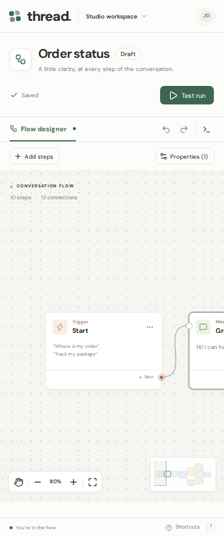
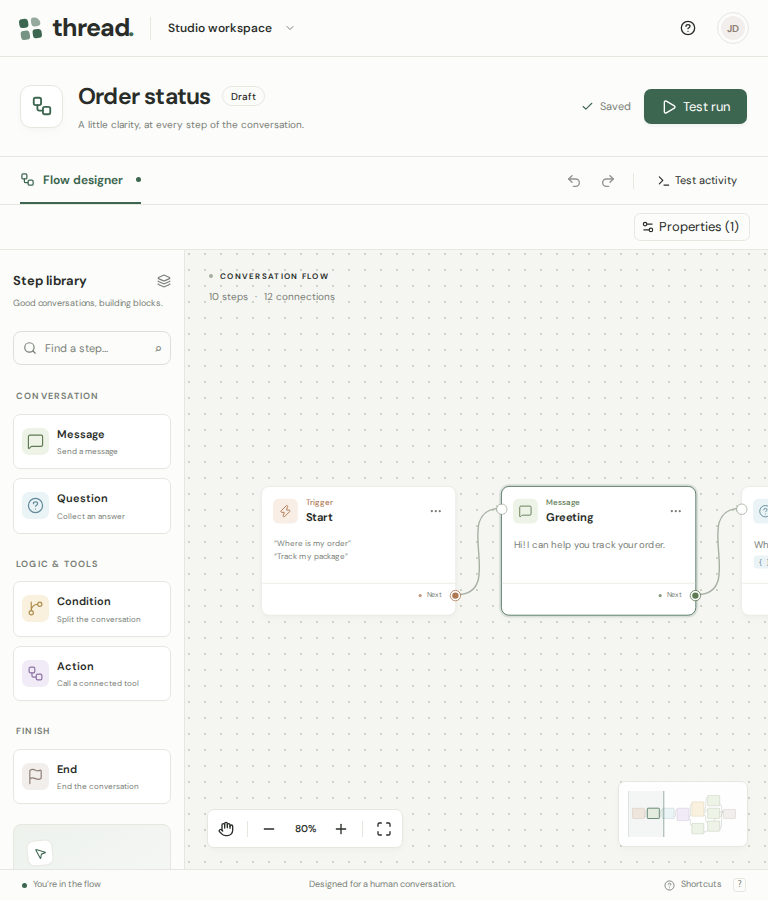
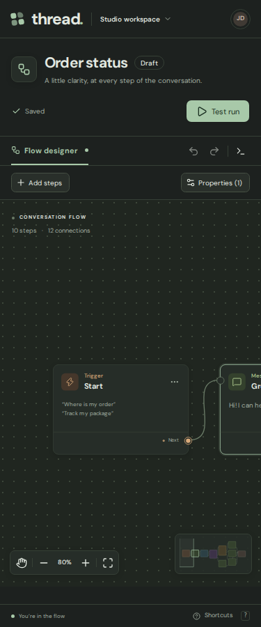
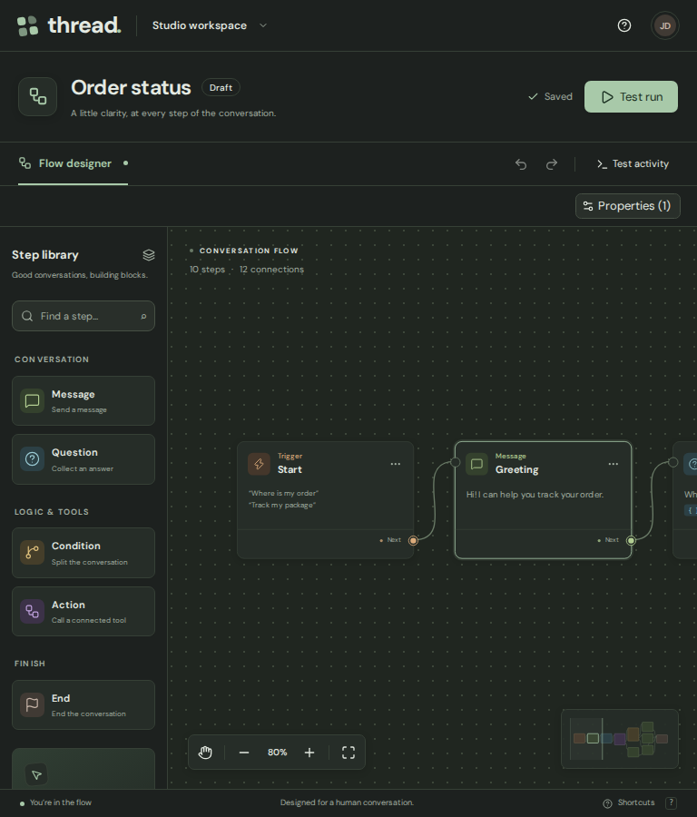
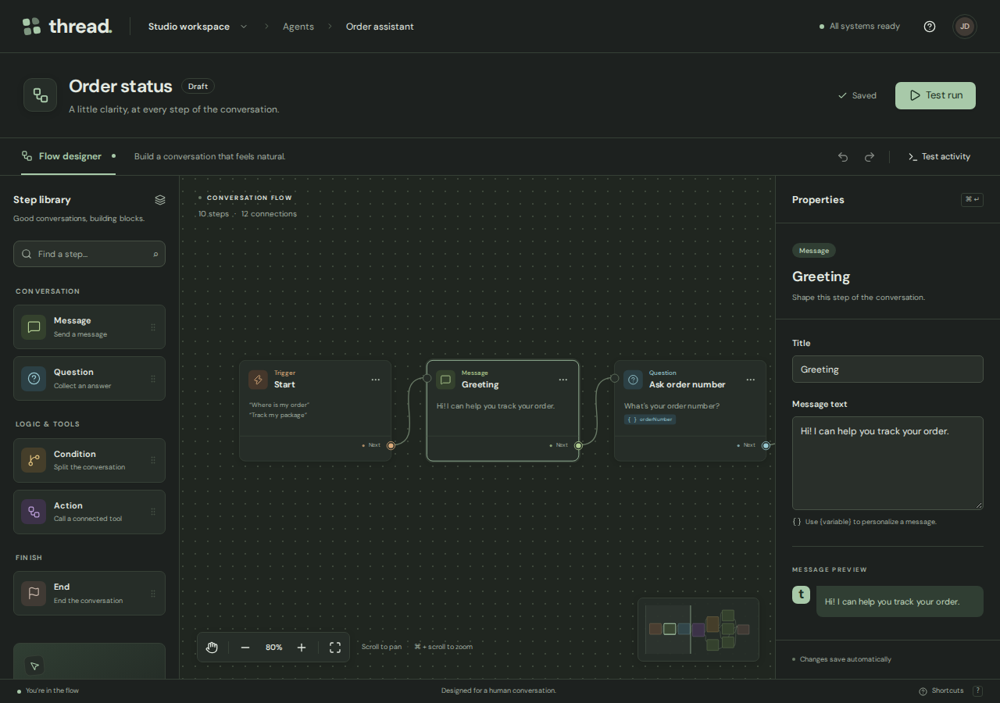

Quality
- Build
- yes
- Typecheck
- yes
- Keyboard-only flow
- yes
- Axe rules violated
- 10
- Console errors at load
- 0
Time and process
- Wall clock
- 18.1 min
- Model time
- 16.4 min
- Tool time
- 1.7 min
- Turns
- 24
- Tool calls
- 25
- Builds (failed)
- 4 (1)
- Vendor skill used
- yes
Tokens and cost
- Cost
- $0.700
- Input (uncached)
- 50,113
- Cache read
- 1,596,544
- Cache write
- 0
- Output
- 43,993
computed from rollout token records and config pricing
Output
- Code lines added
- 2,073
- Bundle (gzip)
- 161.2 KB
- Dependencies added
- @fontsource-variable/dm-sans@^5.3.0, @playwright/test@^1.65.1
gpt-6.1-sol, CLI 0.169.0; shadcn 4.23.0, @base-ui/react 1.9.0, lucide-react 1.73.0.
Prompt
The complete prompt the agent received, verbatim (2,196 words). Both models got exactly the same text for this task; the shadcn/ui and UI SDK versions differ only in the Stack paragraph. Raw markdown
Show the full prompt
You are working in a frontend project in the current directory. Complete the task below on your own in this one session: nobody will answer questions or give feedback, so make reasonable decisions and finish. When you are done, the project must build with npm run build.
Stack
Vite + React 19 + TypeScript + Tailwind CSS v4, with shadcn/ui already initialised (components.json). Add shadcn/ui components with its CLI as you need them. See AGENTS.md / CLAUDE.md for project notes.
Rules
- UI only. There is no real backend, server or authentication. Use the mock API in
src/mock/api.tsfor all data; don't edit anything insrc/mock/. If you need something it doesn't cover, add your own in-memory placeholder in a separate file. - Build the whole task as the app's single page (replace
src/App.tsx). No routing is needed. - You may add utility libraries (for example drag-and-drop, virtualization, positioning or table-state helpers). Don't add a ready-made implementation of the widget you are asked to build (for example a data grid or spreadsheet component, a node-graph or flow-canvas library, or a calendar/scheduler suite).
- It must work in light and dark mode (see the dark mode note in AGENTS.md / CLAUDE.md) and at mobile width (375 px) as well as desktop.
- Follow the accessibility requirements in the task, including any accessibility contract: exact roles, accessible names and attributes are part of the task.
- Keep
base: './'invite.config.tsso the build works from a subpath.
Task: Agent flow canvas
Build a single-page authoring canvas for a conversational agent's flow: a graph of steps (nodes) joined by connections (edges), edited by direct manipulation. Think of a node-based topic or flow designer: the person drags steps onto a canvas, wires their outputs to other steps' inputs, edits each step in a side panel, and runs a test conversation that highlights each step as it runs. The visual design is up to you, but it must be original: don't copy any existing product's look, name or branding.
The flow model, connection rules and data come from the mock API in src/mock/api.ts: loadFlow, saveFlow, listTools, startTestRun, and helpers outputPorts, hasInput, canConnect, NODE_TYPE_LABELS, GRID_SIZE. Keep the flow as a FlowDocument (the types in src/mock/fixtures.ts). Nothing is really executed; startTestRun is a placeholder that reports steps over time.
Node types
| Type | Input | Outputs (port id: label) | Properties |
|---|---|---|---|
| Trigger | none | next: Next | trigger phrases |
| Message | one | next: Next | message text |
| Question | one | next: Next | question text, variable that stores the answer, answer type |
| Condition | one | one per branch (branch id: branch label), then else: Else | branches (label and condition expression) |
| Action | one | success: Success, failure: Failure | tool (from listTools()), tool input |
| End | one | none | none |
Every node has a title. A flow has exactly one Trigger. Connection rules are in canConnect: an edge goes from an output port to another node's input port, a node can't connect to itself, the Trigger has no input, an output port holds at most one edge (connecting it again replaces its edge), and an input can receive any number of edges.
Accessibility contract
The tests rely only on this contract, so follow it exactly:
- Canvas: one element with
role="application"and the accessible name "Flow canvas" contains the nodes and edges. - Nodes: each node is an element with
role="group",aria-roledescription="node", and the accessible name "<Type>: <title>" (for example "Message: Greeting"; types as inNODE_TYPE_LABELS). It is focusable, and carriesdata-node-id(the node id),data-xanddata-y(its position in flow coordinates, matching the document),data-selected("true"or"false") anddata-run-state("idle","running","done"or"failed"). - Ports: inside each node, every port is a button. The input port is named "Input of <title>". Each output port is named "Output <port label> of <title>" (for example "Output Success of Look up order").
- Edges: each edge is rendered as an element (an SVG path is fine) with
data-edge-id,data-source,data-source-portanddata-targetmatching the document. - Node menu: each node has a button named "More options for <title>" opening a menu with "Duplicate" and "Delete" (disabled for the Trigger).
- Announcements: a polite live region (
role="status"oraria-live="polite") announces changes. Each message must contain the parts shown: "Moved <title>" (or "Moved N nodes"), "Connected <source title> to <target title>", "Disconnected <source title> from <target title>", "Deleted N node(s)", "Can't connect" (with a reason) for a rejected connection, and "Undid" / "Redid" followed by what was undone or redone.
Canvas
- Pan: dragging on empty canvas pans; the mouse wheel pans. Zoom: Ctrl/Cmd + wheel (and trackpad pinch) zooms around the pointer, between 25% and 200%.
- A toolbar named "Canvas controls" has buttons "Zoom out", "Zoom in" (each a factor of 1.25) and "Fit to view", and shows the zoom level as text like "100%". "Fit to view" pans and zooms (never above 100%) so every node is inside the visible canvas.
- With focus in the canvas,
+or=zooms in,-zooms out, and0resets to 100%.
Adding nodes
- A toolbar named "Add node" has buttons "Add Message", "Add Question", "Add Condition", "Add Action" and "Add End". Clicking one adds that node at the center of the visible canvas; dragging one onto the canvas adds it where it is dropped. New nodes are snapped to the grid, selected and focused, and get the title "<Type> <n>" with the lowest n that isn't taken (for example "Message 1"). Defaults: empty texts, Question variable
answer<n>and answer type text, Condition with one branch labelled "Branch 1", Action with the first tool. - Each unconnected output port shows a button named "Add step after <port label> of <title>". Each edge shows a button named "Insert step between <source title> and <target title>" (it may appear only on hover, focus or when an end node is selected, but it must be reachable by keyboard). Both open a menu named "Add step" with "Message", "Question", "Condition", "Action" and "End". After an output port, the new node is placed to the right and connected from that port. On an edge from A to B, the new node N is placed between them and the edge becomes A → N and N's first output → B (an End node just gets A → N).
Connecting
- Pointer: drag from an output port and release over another node's input port or body. Show a preview line while dragging. A valid drop creates the edge (replacing the output's previous edge); an invalid drop creates nothing and announces "Can't connect …".
- Keyboard and click: activating an output port (Enter, Space or a click without dragging) opens a menu listing every valid target as a menu item named with the target's node name (like "Message: Greeting"), plus "Disconnect" when the port is connected. Invalid targets are not listed.
Selecting, moving, deleting
- Click a node to select only it; Shift+click (or Ctrl/Cmd+click) toggles it in the selection; Shift+drag on empty canvas draws a lasso that selects the nodes it intersects; click on empty canvas clears the selection. With focus in the canvas, Ctrl/Cmd+A selects all nodes and Escape clears the selection.
- Dragging a selected node moves every selected node together; dragging an unselected node selects it and moves it. On release, positions snap to the
GRID_SIZE(20 px) grid. - Keyboard: each node is a Tab stop, followed in Tab order by its own buttons. With a node focused, Arrow keys move focus to the nearest node in that direction; Space toggles the focused node's selection; Enter selects only the focused node. Alt+Arrow moves the selected nodes (or the focused node if none are selected) by 20 px, Alt+Shift+Arrow by 100 px.
- Delete or Backspace (with focus in the canvas, not in a text field) deletes the selected nodes and their edges. Ctrl/Cmd+D duplicates them, offset by 40 px right and down, with the edges between duplicated nodes copied; the copies are titled "<title> copy" and become the selection. The Trigger can't be deleted or duplicated.
Properties panel
A region named "Properties":
- With nothing selected it says "Select a node to edit its properties". With several selected it says "N nodes selected".
- With one node selected it shows a "Title" text field and the fields for its type: Trigger "Trigger phrases" (textarea, one phrase per line); Message "Message text"; Question "Question", "Save answer as" and "Answer type" (Text, Number, Yes/No); Condition, for each branch i (from 1), "Branch i label" and "Branch i condition" and a "Remove branch i" button (disabled for the last remaining branch), then "Add branch"; Action "Tool" (by tool name) and "Tool input"; End only "Title".
- Edits apply as you type (the node updates live). "Save answer as" must be a valid identifier; otherwise show "Use letters, numbers and underscores, and don't start with a number", mark the field invalid, and keep the last valid value in the document. Removing a branch removes its edge.
Undo and redo
Ctrl/Cmd+Z undoes and Ctrl/Cmd+Shift+Z or Ctrl+Y redoes (when focus isn't in a text field). "Undo" and "Redo" buttons do the same and are disabled when there is nothing to undo or redo. Every change above is undoable: adding, inserting, connecting, disconnecting, moving (one step per drag or key press), deleting, duplicating, branch changes and property edits (consecutive edits to one field are one step).
Saving
- On start, load the flow with
loadFlow(), showing "Loading flow…". On failure show "Couldn't load flow" and a "Retry" button. - Autosave: about 1 second after the last change, call
saveFlow()with the current document. A save status in the header (a polite live region) reads "Saving…", then "Saved", or "Save failed" with a "Retry" button that saves again. Changes made while a save is in flight are saved afterwards; nothing is lost.
Test run
- A "Test run" button calls
startTestRun(document, onEvent, { signal }). While a run is in progress it reads "Stop test run" and stops the run (by aborting the signal); editing is disabled during the run. - The node currently running has
data-run-state="running"and a clear visual highlight; finished steps are"done"or"failed". Starting a new run resets every node to"idle"first. - A log (
role="log") named "Test run" lists each step with the node's title, and ends with "Run completed", "Run failed: <message>" or "Run stopped".
Responsive and themes
At 375 px wide the page has no horizontal scrolling, the canvas uses the full width, and the node palette, properties panel and test run log remain reachable (for example as collapsible panels or sheets). Everything must look right and remain readable in light and dark mode.
Acceptance criteria
- The flow loads ("Loading flow…" first; "Couldn't load flow" and "Retry" on failure) and every node and edge is exposed through the accessibility contract.
- Dragging on empty canvas pans; Ctrl/Cmd+wheel and the "Zoom in"/"Zoom out" buttons change the zoom shown as a percentage; "Fit to view" brings every node into view.
- "Add node" buttons add a snapped, selected, focused node titled "<Type> <n>" at the center; dragging a palette button onto the canvas adds the node at the drop point.
- "Add step after …" on an output port and "Insert step between …" on an edge open the "Add step" menu and insert and connect the chosen node as specified.
- Dragging from an output port to another node's input creates an edge; invalid drops (to the Trigger, to the same node, from input to input) create nothing and announce "Can't connect".
- Activating an output port opens a menu of valid targets; choosing one connects and announces "Connected …"; "Disconnect" removes the edge.
- Dragging a node moves it and snaps to the 20 px grid; dragging one of several selected nodes moves them all.
- Shift+click and Shift+drag lasso select several nodes; Ctrl/Cmd+A and Escape select all and clear.
- Delete removes the selected nodes and their edges (never the Trigger); Ctrl/Cmd+D and "More options" → "Duplicate" duplicate as specified.
- The "Properties" panel shows the right fields for each node type, edits apply live, "Save answer as" is validated, and branches can be added and removed.
- Undo and redo (keys and buttons) reverse and reapply adds, connections, moves, deletes and property edits.
- Arrow keys move focus between nodes; Space and Enter select; Alt+Arrow moves the selection by 20 px and announces "Moved …".
- Changes are autosaved with
saveFlow()holding the current document, with "Saving…" then "Saved". - A failed save shows "Save failed" and "Retry", which saves successfully.
- "Test run" highlights each step in turn through
data-run-state, logs the steps in the "Test run" log, ends with "Run completed", and can be stopped ("Run stopped"). - At 375 px wide the page doesn't scroll horizontally and the canvas uses the full width; light and dark mode both render readable content.
Screenshots
Taken by the evaluator at three widths in light and dark mode.





